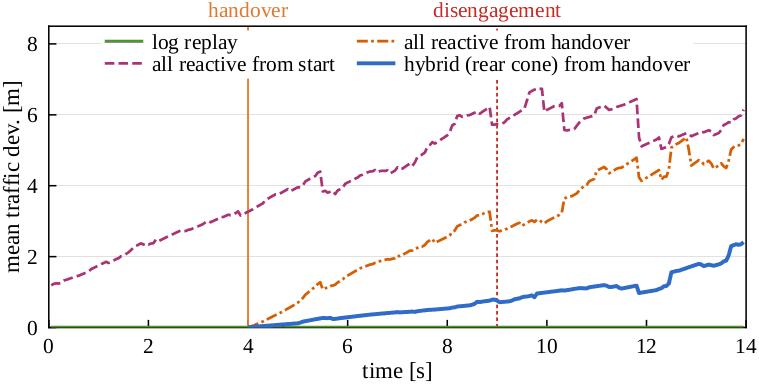

Rosbag2Scenario turns fragmented on-board object tracks into continuous traffic scenarios. Reproducing a recorded failure lets developers inspect it in simulation and test whether a revised driving stack handles it differently.
How It Works

1. Read the observed scene
Start from the ego pose and object tracks in a ROS bag. The online tracker provides what the driving stack perceived; offline perception is an optional source.
2. Repair fragmented tracks
Filter tracklets, associate compatible fragments and complete their motion across gaps. Inspect the completion methods and ambiguous links.
3. Export and hand over
Export OpenSCENARIO and a traffic plan. Replay the ego until shortly before the recorded disengagement, then hand control to the driving stack. Vehicles in the rear cone (90° opening, 100 m range) become reactive.
4. Test the driving stack
Run the reconstructed encounter in CARLA/SUMO. Compare its behavior with the recording and reuse reproduced events to test a revised stack.
Why Following Traffic Must React
D2 on the updated driving stack: the ego passes the partly blocking truck. Compare how the two following vehicles respond under the hybrid policy and under log replay.
The original stack waits behind the truck. The updated stack passes it, while reactive following traffic adapts to the changed ego behavior.
Published Results
Evaluation combines three Town10 drives with simulator ground truth and nine real urban disengagements. The tables below retain the submitted results.
- 5 of 9recorded disengagements reproduced in closed loop
- 63 / 111tracker gaps rejoined, with no wrong link
- 4–7 mmmedian execution error of vehicles and ego up to the handover
- 0.8 mmean traffic deviation at the disengagement under the hybrid policy, against 5.6 m with all traffic reactive
Reconstruction of fragmented tracks
The benchmark measures association separately from completion. Completion receives the correct fragment pairs; association must find those pairs among the observed tracks.
| Method | Rejoined | Rejoined, moving | Wrong links | RMSE [m] | RMSE moving [m] |
|---|---|---|---|---|---|
| Constant velocity | – | – | – | 1.00 | 1.16 |
| Hermite | – | – | – | 1.21 | 1.23 |
| Zhu et al., 2 s gate | 58 | 17 | 2 | 1.17 | 1.25 |
| Zhu et al., 5 s gate | 62 | 15 | 8 | 1.17 | 1.25 |
| Ours | 63 | 33 | 0 | 0.88 | 0.96 |
Reconstruction of 111 tracker gaps in three CARLA drives (paper, Table II). Rejoined counts gaps whose two fragments end up as one actor; wrong links join different vehicles.
Reactive traffic and handover
With the ego replaying its recorded path, the hybrid policy limits traffic drift before the encounter while allowing following vehicles to react after handover.

Disengagement reproduction
Reconstruction and execution measurements
With the handover 5 s before the disengagement, reconstruction moves the recorded samples by a median of 0.06 m up to the handover, execution adds 4 mm for the vehicles and 7 mm for the ego, and 98.5 % of the expected vehicle samples are present. The simulated stack tracks 87.6 % of the vehicles that the real stack tracked. At the disengagement, the simulated ego differs from the recorded one by a median of 1.0 m along its path, 0.06 m laterally and 0.8 m/s in speed. Creating a scenario takes 0.5–3.5 min per recording on a desktop CPU, for scenes with 74–248 actors.
| ID | Situation | Cone | Cov. | ≤ 2 m | ed | Outcome |
|---|---|---|---|---|---|---|
| D1 | truck blocks lane | 6 | 100.0 | 90.8 | 0.41 | reproduced |
| D2 | truck partly blocks lane | 4 | 98.5 | 68.8 | 0.63 | reproduced |
| D3 | protruding parking car | 10 | 100.0 | 73.4 | 4.11 | reproduced |
| D4 | reversing car, parked coach | 18 | 91.2 | 64.7 | 9.86 | diverged |
| D5 | close pass of parked car | 1 | 100.0 | 97.6 | 11.20 | diverged |
| D6 | pedestrians at right turn | 1 | 95.9 | 77.9 | 0.02 | reproduced |
| D7 | lane change beside a car | 10 | 98.7 | 82.6 | 2.04 | diverged |
| D8 | taxi about to reverse | 0 | 97.5 | 97.5 | 1.03 | diverged |
| D9 | cyclist, pedestrians at crosswalk | 2 | 83.9 | 80.1 | 0.22 | reproduced |
Re-simulation of nine recorded disengagements (paper, Table III). Cone is the number of reactive rear-cone vehicles. Cov. and ≤ 2 m are the shares [%] of expected vehicle samples present before th and within 2 m of the reconstruction from th to td + 5 s. ed is the ego position error at td [m]. The paper reports three divergences in accurately reproduced scenes (D4, D7, D8) and one with a scene mismatch (D5).
Inspect more cases: six simulated cameras and BEV
The stack under test stops behind the blocking truck (D1), waits behind the partly blocking truck (D2), approaches the protruding car without a sustained stop (D3), holds for the pedestrians at the right turn (D6), and stops before a crosswalk for a crossing cyclist and two pedestrians (D9). The measured errors and stack logs indicate the likely causes of divergence. In D4 (closed-loop behavior), the simulated stack brakes at the recorded time but slows more and stays farther from the reversing van. In D5 (scene geometry), the simulated stack perceives angled parked cars farther from its path than the real stack did, because no vehicle model matches the detected box, and passes 2.7 s earlier. In D7 (localization), the real stack likely had a 0.5–0.6 m localization offset that the simulated ego does not have. In D8 (closed-loop behavior), the simulated stack remains stopped for the taxi while the real stack creeps and is about to accelerate again, so the takeover situation does not arise.
These archived runs are the cases reported in the table above. Each clip combines six simulated cameras with a BEV at the same simulation frame. The BEV includes all available vehicles, including those outside the 50 m scoring radius; green R marks vehicles released to reactive control.
D3 · Protruding parked car
D6 · Pedestrians at a right turn
D7 · Close approach during pull-away
D8 · Taxi about to reverse
What Happens Inside a Tracker Gap?
A tracker can lose a vehicle and assign a new ID when it returns. Association first decides which fragments belong to the same vehicle. Completion then fills the missing motion and extends the track ends.

A car pulling away in D7 illustrates these two steps: it disappears for 3.1 seconds and returns under a new ID. Below, the pairing is fixed so you can compare four ways to complete its motion. The gallery also includes benchmark gaps with simulator ground truth.
Inspect a gap
Choose a gap from the gallery to inspect its observed fragments and completion methods.
Heading shows the direction of motion relative to the gap. It is hidden when the vehicle is nearly stationary.
● ○ observed fragments ━━ simulator ground truth (benchmark only) ▧ interval without tracker observations
Browse all 111 benchmark gaps and four real examples
Thumbnails: blue observations, green reconstruction, grey simulator ground truth.

Where the benchmark gaps come from
Three 180 s Town10 drives use 40 traffic vehicles each (seeds 101, 202 and 303). Simulator ground truth identifies vehicles across natural tracker losses and supplies the missing motion for the completion scores. The first 5 s are excluded.
Why sometimes leave two fragments unjoined?
When competing associations are similarly plausible, the method leaves the fragments separate. This avoids forcing an identity decision from ambiguous observations.

Which observations exist at the same time?
Each colored row below is an observed fragment from the same example. Time zero is the end of source 1a5f. The bars show up to three seconds of observations adjacent to each candidate gap; the links remain hypotheses.
Dots show observations; the larger marker follows the selected time within each observed fragment. No motion is invented between fragments. Candidate durations: 0.45 s (1a5f → 99b9), 1.53 s (1a5f → 2659), 1.98 s (3847 → 99b9), and 4.77 s (e51f → 99b9).
Reconstruction settings behind the real-gap examples
The archived configuration and its implementation specify the following settings. Association gates decide whether fragments may belong together; completion limits check the resulting motion.
| Stage | Setting |
|---|---|
| Track splitting | Observation-gap threshold 0.35 s; jump-speed threshold 50 m/s. |
| Association window | Maximum gap 5 s; endpoint velocity window 1 s; speed gate 45 m/s; travel-heading gate 100° when both endpoints move above 0.5 m/s; dimension ratio at most 1.8. |
| Assignment ambiguity | Unmatched cost 4; retain a link only when forbidding it increases the global assignment cost by more than 1. |
| Boundary estimation | Forward/backward constant-acceleration smoothing; position-noise floor 0.3 m; jerk process-noise variance parameter 2; 5 Hz reconstruction grid. |
| Track-end weighting | Position-noise multiplier rises to 1.5 at birth over 1 s, and to 3 at the end over 1.5 s. |
| Completion checks | Cubic Hermite motion; limits of 60 m/s speed, 8 m/s² acceleration/braking and 6 m/s² lateral acceleration; validation step 0.02 s. |
| Extension and fallback | Extend by at most 10 m and 2 s. Use lane support relative to the observed fragments; retain observed motion when a joint fit fails. |
Settings used to reconstruct the real-gap examples.
Aligning the Digital Twin
A useful reconstruction needs a shared map frame, a vehicle that responds to the stack, and a clear account of how motion departs from the recording after handover.
1. Put the map and trajectories in the same frame
Compare the road geometry with the recorded and simulated ego paths across the full encounter.
━━ Lanelet2 boundaries ┄ CARLA lane centers ━━ recorded ego ━━ simulated ego
Lane boundaries and lane centers describe different parts of the road. Both help show how the simulated road follows the recorded route.
2. Follow commands through to motion
On an empty road, compare the stack’s commands with the vehicle’s response and drift from the recorded path. The stack takes control at time zero.

The replay portion stays within 1.2 cm of the recorded ego path in this window. Under stack control, deviation reaches 1.0 m after 5 s and 1.8 m after 10 s; at 5 s the simulated ego is about 0.2 m/s slower. These are execution measurements against the recording. They motivate handing over close enough to the event to preserve its context.
Reading the command plots
Time zero marks the handover from recorded motion to stack control. Before it, the stack produces commands while the ego follows the recording. After it, the vehicle responds to those commands. Position deviation is measured against the recorded ego path.
Scope and Reproducibility
- What can be re-simulated. The five reproduced events are planning-related: an object in the recorded scene determines the behavior of the stack. Events caused by perception or localization errors are outside the scope of a re-simulation from object tracks, because the simulated stack perceives the reconstructed objects anew and localizes without the real error.
- Small margins after the handover. The diverged events were decided by clearances of 0.1–0.4 m and by timing within a second, which the pipeline does not preserve after the handover.
- Tracker artifacts and vehicle models. Partly visible vehicles can have shifting boxes and changing dimensions, making standing and moving vehicles difficult to distinguish. Spawned vehicle models differ from the recorded vehicles; in D4 the model is wider for 95 % of the vehicles. Several limits originate in the tracker, so a better tracker improves the pipeline directly.
- Dynamics at the switch. Released vehicles lose speed when they switch from prescribed to physical motion, and the simulated ego brakes harder than commanded (D3).
- Scene and validity. Actors that were never perceived and traffic signals, which are not reconstructed and reported as green, limit the scene. Reconstruction is scored on simulated drives on one map, where traffic mostly cruises at one speed or stands. The nine disengagements are case studies.
Evaluation protocol and source notes
- Association and completion
- 111 scored natural tracker gaps, including 56 moving and 55 nearly stationary cases. Association counts recovered pairs and incorrect links. Completion is scored with the correct pairs supplied, pooling squared XY error over 3,296 ground-truth timestamps.
- Reference methods
- The benchmark uses the lane-aware Zhu-inspired configuration from Table II. The real examples use the archived Cartesian completion and have no ground truth inside their gaps.
- Execution and behavior
- CARLA 0.9.16, SUMO 1.27.1 and the adapted Autoware Universe stack. Reconstruction and execution errors are measured separately. Event-wise behavioral judgments use stop position, speed, acceleration, vehicle gaps and planner logs.
Main pipeline code release is planned upon acceptance.
BibTeX
@misc{rosbag2scenario,
title = {Rosbag2Scenario: From Real-World Disengagements
to Replayable Scenarios},
author = {Anonymous Authors},
year = {2026},
note = {Under double-blind review}
}